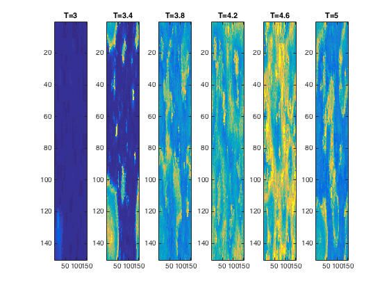
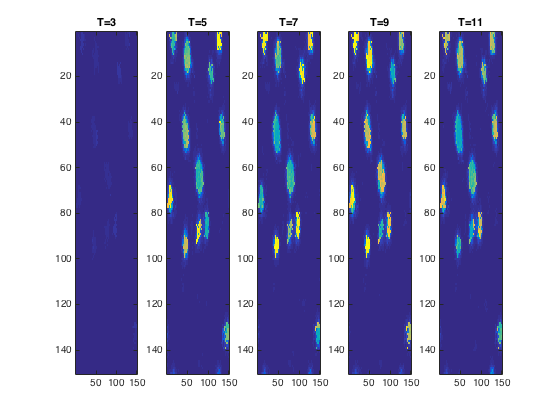
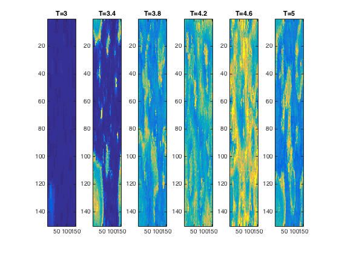
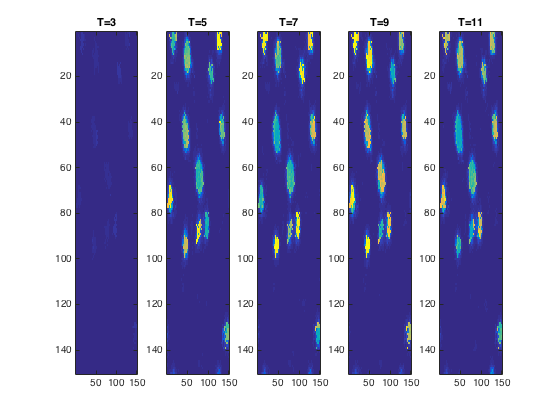

This is the readme for the matlab models associated with the paper
Wang Y, Trevelyan AJ, Valentin A, Alarcon G, Taylor PN, Kaiser M
(2017) Mechanisms underlying different onset patterns of focal
seizures. PLoS
This model was contributed by Y Wang. It has been verified to work on
R2013b, R2014b, R2015a, R2016a versions of matlab.
Usage:
Download and extract this archive. Start matlab and cd to the newly
expanded folder.
And start either HAS (high amplitude spikes) or LAF (low amplitude
fast oscillations) by typing those names on the command line.
HAS generates in about 20 minutes generates the following figures
 
LAF generates in about 20 minutes generates the following figures


LAF generates in about 20 minutes generates the following figures
